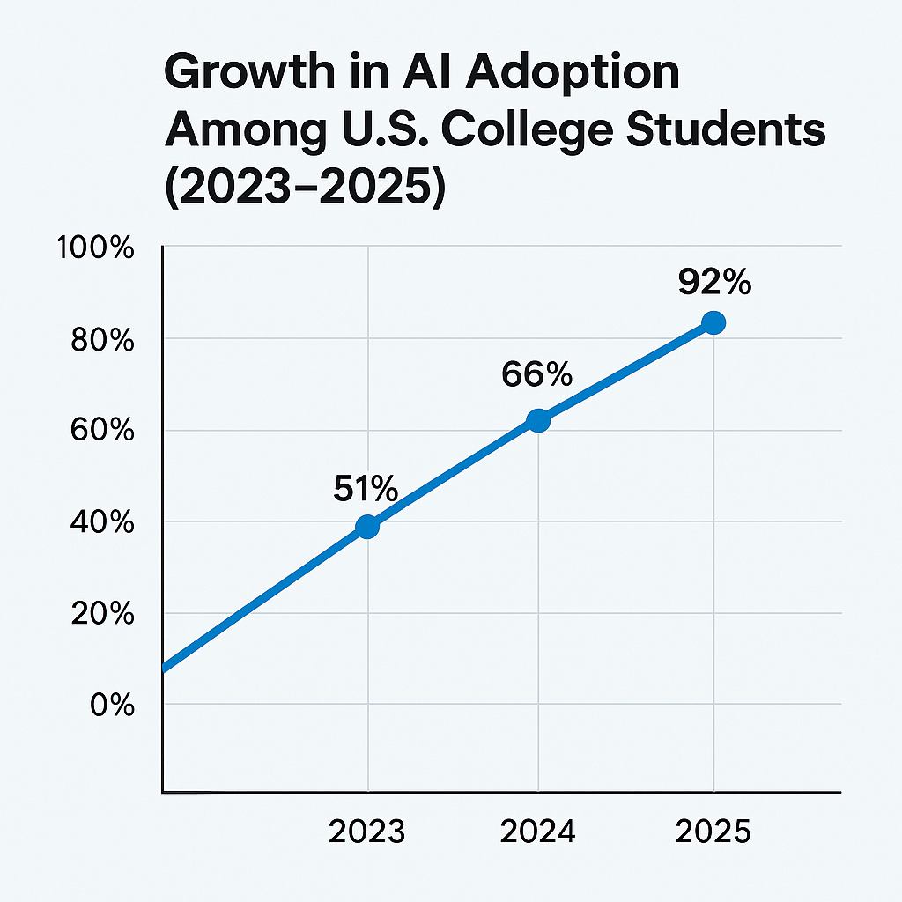
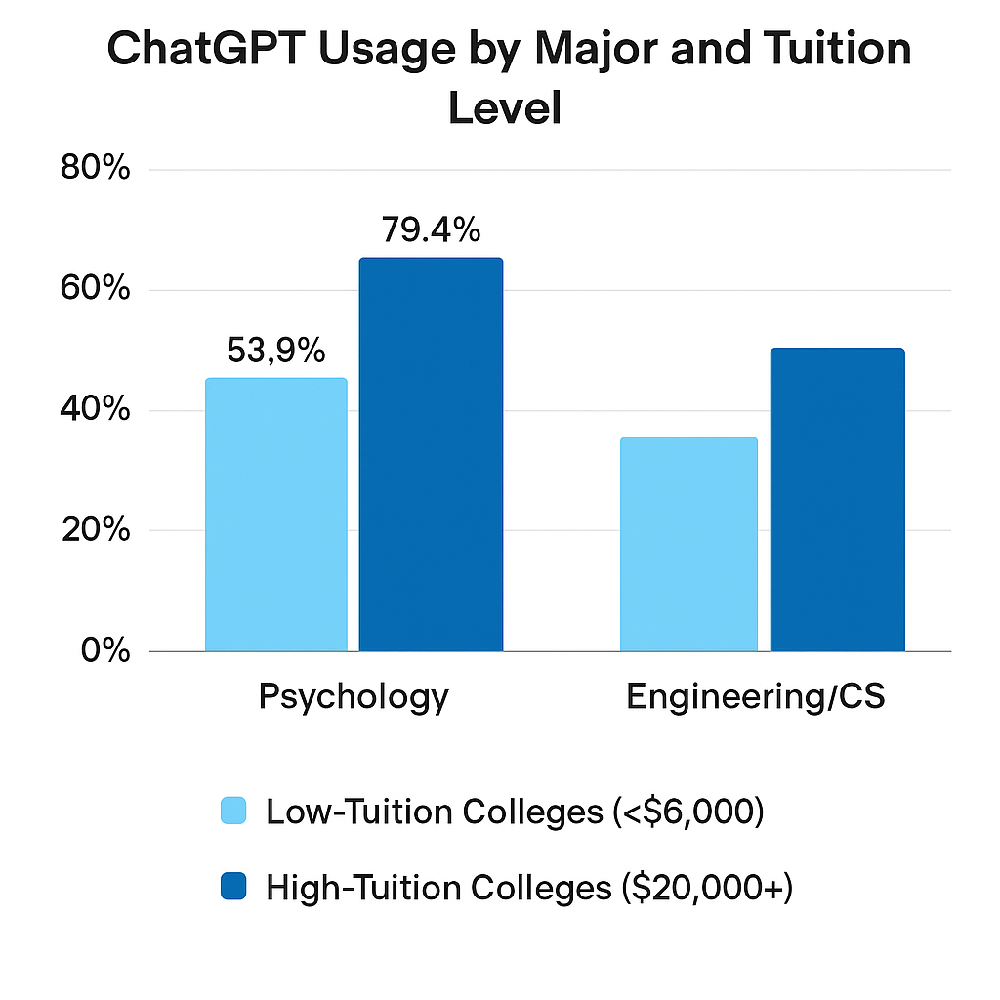
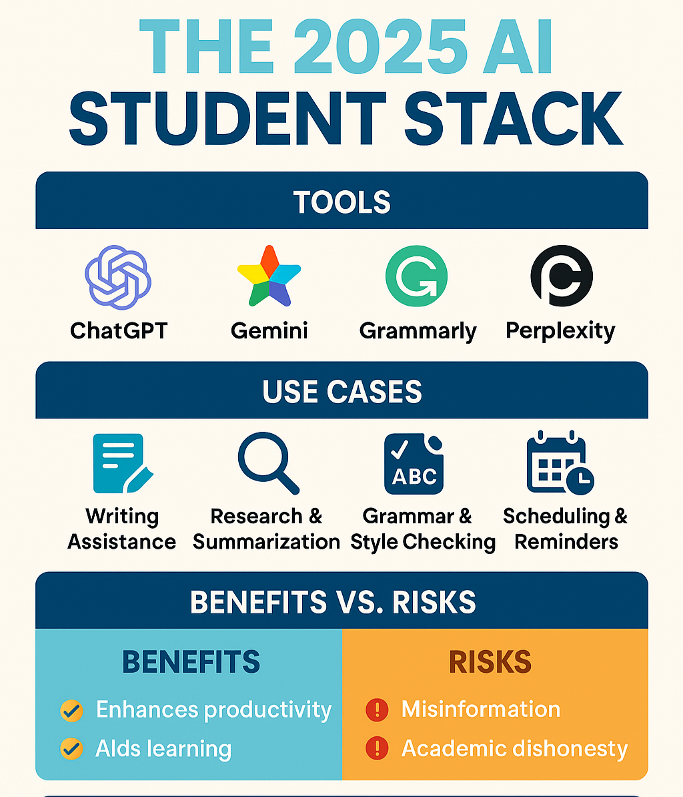

How U.S. College Students Use AI in 2025: A Quantitative Snapshot
Meta Description: Explore how U.S. college students are leveraging AI tools like Writing AI, Paper AI, and AI Assistants in 2025 for academic and personal tasks. This research-backed article reveals usage statistics, trends, and insights into College AI adoption.
1. Introduction
Artificial Intelligence (AI) has rapidly transformed the educational landscape, especially in U.S. colleges. From writing essays with ChatGPT to managing academic calendars with AI assistants like Google Gemini, students are increasingly relying on AI tools to enhance learning efficiency, creativity, and time management. In 2025, the question is no longer whether students use AI—but how, why, and with what impact. This article provides a quantitative snapshot of AI usage among U.S. college students, synthesizing the latest data, trends, and expert insights.
2. The Landscape of AI Adoption in U.S. Higher Education
92% of U.S. college students report using AI tools for academic work in 2025, up from 66% in 2024 and 51% in early 2023.
AI adoption among U.S. college students has soared over the past two years. According to a 2025 survey by Primary Research Group, the majority of students are now using AI for their studies. This marks a dramatic increase in just two years, reflecting the mainstreaming of AI-powered learning tools.
Growth in AI Adoption Among U.S. College Students (2023–2025)

Most Popular AI Tools
| AI Tool |
% Students Used (Past Month) |
| ChatGPT |
64.8% |
| Microsoft Copilot |
15.5% |
| Google Gemini |
13.6% |
| Claude, MidJourney, Grok |
Under 10% each |
Students often use multiple tools, selecting based on task and preference.
3. How College Students Use AI: Key Use Cases
-
Writing and Editing Assignments (Writing AI): Tools like ChatGPT, Claude, and Gemini are frequently used to brainstorm essay ideas, rephrase or rewrite paragraphs, generate academic citations, and improve grammar and clarity.
61% of students used Writing AI to draft outlines or introductions for papers (Pew Research Center, 2024).
-
AI for Research and Summarization: AI tools like Perplexity.ai or Consensus summarize academic papers, saving time for students working under deadlines. 47% of surveyed students use AI for quick topic familiarization.
-
Paper Polishing Tools (Paper AI): Services like Grammarly, QuillBot, and Scribbr AI help improve structure, tone, and plagiarism detection. Usage among international students is especially high (over 72%), due to language support features.
-
AI Assistants for Scheduling and Reminders: Tools like Google Gemini and Microsoft Copilot are helping students manage due dates, lectures, and to-do lists. These tools integrate with calendars and virtual classrooms.
-
Practice and Tutoring: AI chatbots (like Khanmigo or Scribe AI) offer step-by-step problem solving for subjects like calculus, coding, and chemistry.
-
Other Uses: Time management, career prep (resume building, mock interviews, skill assessments), and mental health support via chatbots and wellness apps.
4. Trends and Segmentation: Who Uses AI, and How?
| Segment |
ChatGPT Usage |
| High-Tuition Colleges ($20,000+) |
79.4% |
| Low-Tuition Colleges (<$6,000) |
53.9% |
- By Academic Major: Psychology (brainstorming and writing), Engineering/CS (coding), Criminology (Microsoft Copilot).
- By Demographics: Males, wealthier students, international students, and urban students report higher usage. Higher adoption among Hindu students and politically moderate individuals.

5. Institutional Policies, Support, and Student Attitudes
- Policy Clarity: 80% of institutions now have clear, published AI policies (up from 63% in 2024).
- Detection Confidence: 76% of students believe their institution can detect AI use in assessments (up from 65%).
- Support and Training: Only 36% of students report receiving institutional support or training in AI literacy. 42% feel that faculty and staff are well-equipped to help students use AI responsibly.
“AI saves me hours each week, but I still double-check everything for errors.” — Nia W., Marketing major at NYU
Top 3 Concerns
- Misinformation from AI models
- Over-reliance leading to skill loss
- Academic dishonesty and plagiarism detection
6. Challenges, Concerns, and the Digital Divide
- Academic Integrity: 18% of students admit to submitting AI-generated text as their own.
- Detection Arms Race: As detection improves, students are more cautious and selective.
- Equity Gap: Well-funded colleges and higher income students access better tools and training. Students in STEM and high-tuition colleges feel more confident.
- Misinformation and Bias: Concerns about AI “hallucinations” and biased outputs. There’s a growing emphasis on critical evaluation of AI content.
7. The Future of AI in College Life and Beyond
- Career Readiness: 74% of college students believe AI literacy will be required in most jobs within five years.
- AI as a Lifelong Assistant: Content generation, research, analysis, coding, and automation are key areas where AI will persist post-graduation.
- The Human Element: Despite AI’s rise, creativity, ethics, and critical thinking remain irreplaceable.
8. Visual Assets
- Chart 1: Growth in AI Adoption Among U.S. College Students (2023–2025)
- Chart 2: ChatGPT Usage by Major and Tuition Level
- Infographic: "How U.S. College Students Use AI in 2025" (summary visual)

- ChatGPT: Used for research, writing, and HTML formatting.
- DALL·E: Used to generate line charts and visual diagrams.
- Canva: Used to generate infographic visuals.
- Statista, EDUCAUSE, Pew Research, Primary Research Group: Used for real-world data and sources.
Conclusion
U.S. college students are pioneering how AI is used in daily learning, combining convenience with caution. As AI evolves, so too must our understanding of digital literacy, academic ethics, and human-AI collaboration. In this new academic era, it's not just about learning with AI—but learning how to use it wisely. As Writing AI, Paper AI, and AI Assistants become ever more sophisticated, colleges must ensure all students have the skills and support to thrive in the AI-powered future.
Frequently Asked Questions (FAQs)
How are U.S. college students using AI in 2025?
Most students use AI for writing and editing assignments, summarizing research, managing schedules, practicing problem-solving, and even for mental health support. Tools like ChatGPT, Microsoft Copilot, Google Gemini, and specialized platforms such as Grammarly and QuillBot are integrated into daily academic life.
Which AI tools are most popular among college students?
According to 2025 data, ChatGPT is the most widely used Writing AI, followed by Microsoft Copilot, Google Gemini, and Paper AI tools like Grammarly and QuillBot. Many students use a combination of these tools depending on their needs.
What are the main benefits of using AI tools for college students?
AI tools help students save time, improve the quality of their writing, manage deadlines, and access personalized tutoring. They also support non-native English speakers with grammar and clarity, and assist with research by quickly summarizing complex topics.
Are there risks or downsides to relying on AI for academic work?
Yes. Students and institutions are concerned about misinformation, over-reliance leading to skill loss, plagiarism, and the potential for academic dishonesty. There is also a risk of AI-generated content containing biases or factual errors, so critical evaluation is essential.
How do colleges detect and regulate the use of AI in coursework?
By 2025, 80% of U.S. colleges have published AI policies, and 76% of students believe their institution can detect AI-generated content. Detection tools and faculty training are increasingly common, but policies and enforcement vary by institution.
Is there a digital divide in access to AI tools among students?
Yes. Students at well-funded or high-tuition colleges, and those from higher-income backgrounds, generally have better access to advanced AI tools and training. This creates equity concerns, especially for students at under-resourced institutions.
Will AI literacy be important for future careers?
Absolutely. 74% of surveyed students believe AI literacy will be essential for most jobs within five years. Skills in using Writing AI, Paper AI, and AI Assistants are increasingly valued by employers.
Can AI replace traditional learning or human creativity?
While AI can automate routine tasks and enhance productivity, it cannot replace human creativity, ethical judgment, or critical thinking. Most educators and students view AI as a tool to augment, not replace, traditional learning.
10. References
- Primary Research Group. (2025)
- Statista. (2024)
- EDUCAUSE. (2025)
- HEPI. (2025)
- Pew Research Center. (2025)